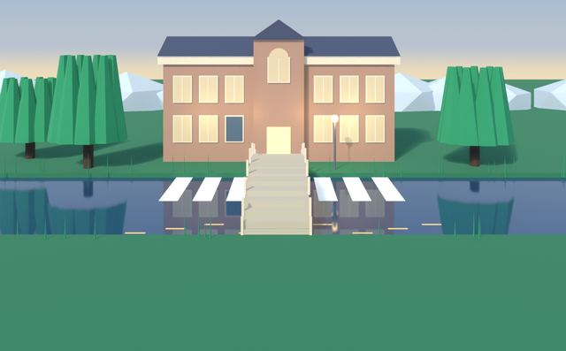
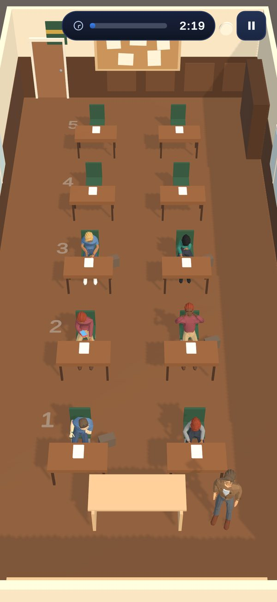
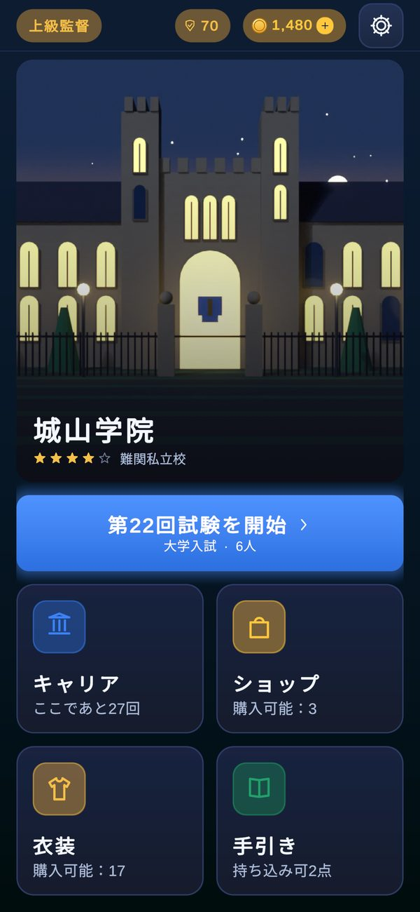
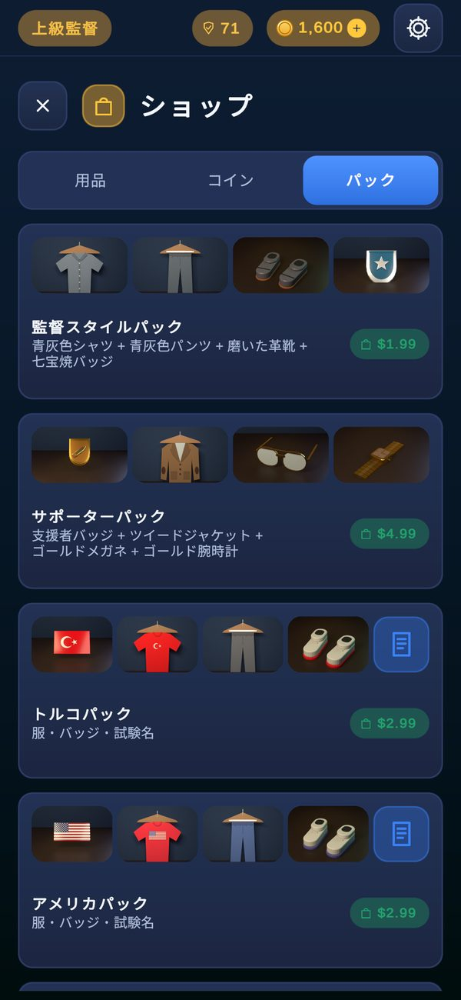
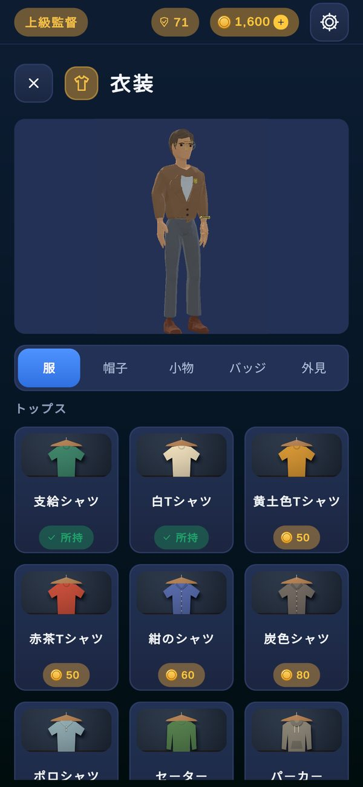
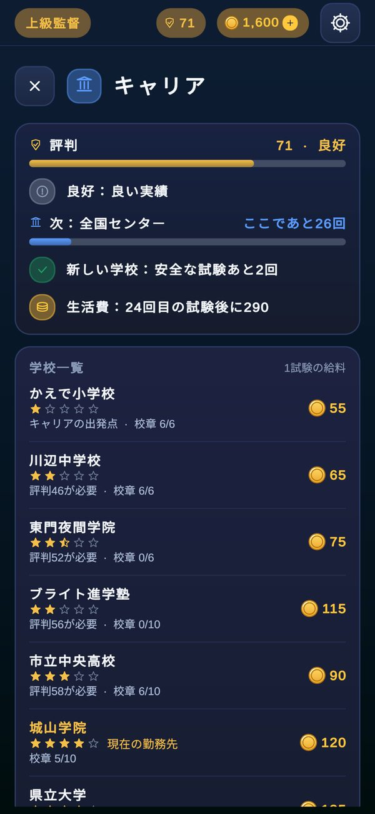

教室を見渡す
横へのちらりとした視線、机の下の手、2列後ろのささやき声。試験監督の目に映るものがあなたにも見えます。そしてどう対処するかを決めるのはあなたです。注意する、没収する、退室させる、それとも見過ごすか。
試験を監督するモバイルゲーム
本物の決断。本物の結末。
あなたは試験監督。教室を見渡し、机の上にあるものを読み取って、注意するか、没収するか、退室させるか、それとも見過ごすかを決めます。不審＝不正ではありません。かえで小から全国試験センターまで、8つの学校でキャリアを築き、コインを稼いで監督の装いを整えましょう。広告なし、課金なしで最後まで遊べて、オフラインでもプレイできます。

遊び方
横へのちらりとした視線、机の下の手、2列後ろのささやき声。試験監督の目に映るものがあなたにも見えます。そしてどう対処するかを決めるのはあなたです。注意する、没収する、退室させる、それとも見過ごすか。


落ちた鉛筆はカンニングペーパーではありません。動く前に、机の上にあるものと、席に座っているのが誰かを読み取りましょう。誤った判断は見逃しと同じだけ高くつき、評判はそのどちらも覚えています。

かえで小からスタートして、全国試験センターを目指しましょう。どの学校にも独自の教室、独自のプレッシャー、独自のハプニングがあります。ラッシュアワーの車の故障から全国統一試験まで。

小学校

中学校

社会人向け夜間・職業学校

高校

進学塾

難関私立校

大学

全国試験機関


スマホ探知機は近くのスマホを見つけます。ただし手がかりであり、証拠ではありません。試験の前に用品を買いそろえ、使いどきを見極めましょう。


しっかり仕事をこなしてコインを稼ぎ、衣装で使いましょう。トップス、ボトムス、靴、帽子、メガネ、バッジ、そしてこれまで勤めたすべての学校の校章がそろっています。

広告なし、ガチャなし、課金を迫るタイマーもなし。ゲームはすべて無料で遊べます。任意の購入はコインと見た目のアイテムだけで、何が手に入るかは常にわかります。
スクリーンショット

試験会場

キャリア

ショップ

衣装

キャリア
質問
いいえ。ゲーム内に広告はなく、広告IDも使用しません。
はい、基本プレイ無料で、課金しなくてもゲームを最後まで遊べます。任意の購入は見た目のアイテムとコインです。ランダム要素はなく、支払う前に何が手に入るかが必ずわかります。
いいえ、オフラインで遊べます。許可した場合、ゲームは匿名のプレイ統計とクラッシュレポートを送信します。これは設定からいつでもオフにできます。詳しくはプライバシーポリシーをご覧ください。
English、Türkçe、Español、Français、日本語、Português (Brasil)、Русскийに対応しています。
AndroidスマートフォンとiPhone・iPadです。どちらも近日公開予定です。
support@pencilsdowngame.comまでメールいただくか、サポートページをご覧ください。
本物の決断。本物の結末。
Android・iPhone/iPadで近日公開予定です。